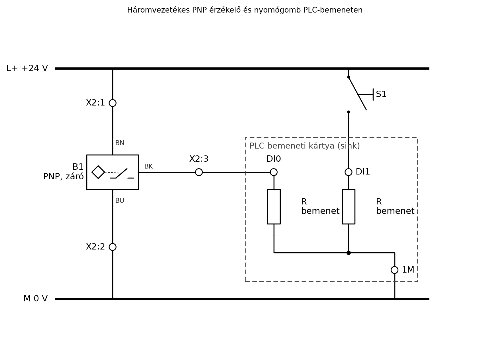
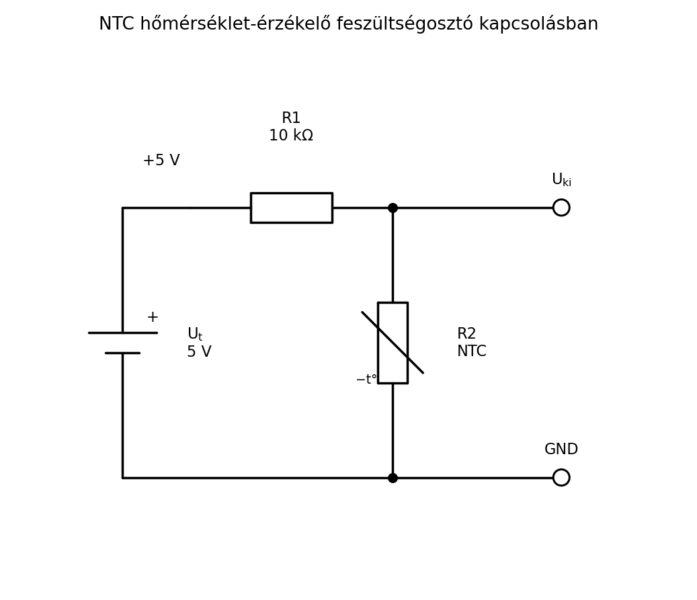
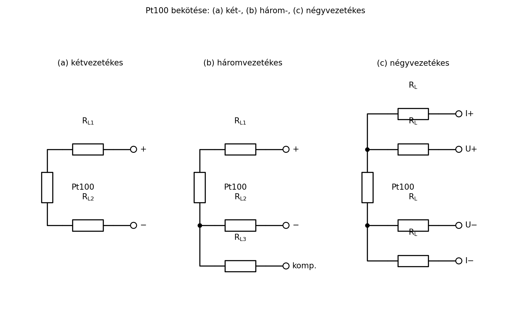
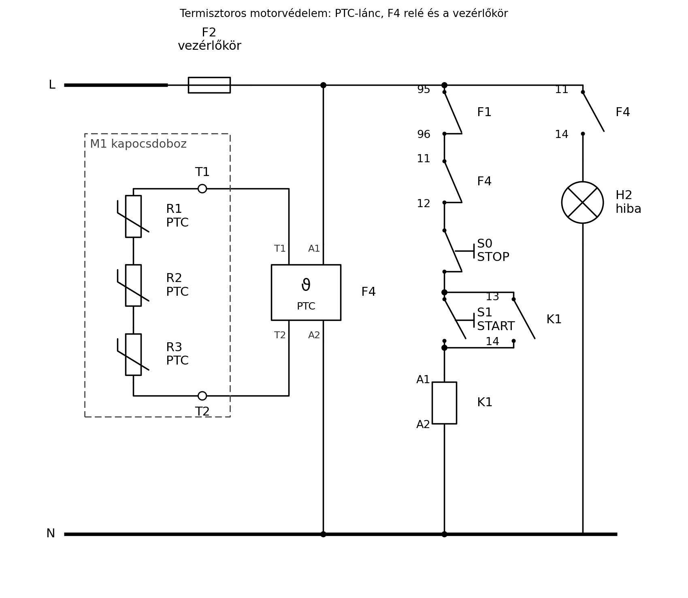

Egy vezérlőelektronika, egy motorvédő relé vagy egy intelligens kapcsolószekrény nem tud „nézelődni”: csak feszültséget és áramot ismer. Ahhoz, hogy a gép ne égjen le, hogy a lámpa este magától bekapcsoljon, vagy hogy egy zivatar ne tegye tönkre a napelemes invertert, olyan alkatrészek kellenek, amelyek a fizikai környezet hatására megváltoztatják az elektromos tulajdonságaikat. Ebben az alfejezetben a hő-, fény- és feszültségfüggő félvezetőkből készült érzékelőket és védelmi elemeket ismerjük meg, és megtanuljuk őket úgy bekötni, hogy a jelüket egy PLC-bemenet, egy mikrokontroller vagy egy kapcsolóáramkör közvetlenül értelmezni tudja.
Képzelj el két mindennapi helyzetet. Az elsőben egy háromfázisú aszinkronmotor tekercsébe ágyazva egy apró érzékelő (PTC), amelynek kivezetései a kapocsdobozba futnak, figyeli a tekercs hőmérsékletét; ha a motor túlmelegszik, a PTC-t figyelő termisztoros motorvédő relé leold (bontja a mágneskapcsoló vezérlőkörét), és nem engedi leégni a szigetelést. A másodikban egy kültéri lámpa kapcsolószekrényében van egy kicsi, sötét lencséjű alkatrész: amikor lemegy a nap, ez az alkatrész érzékeli, hogy már nincs elég fény, és bekapcsolja a mágneskapcsolót. Előbbiben termisztor, utóbbiban fotóellenállás dolgozik. Mindkettő közös elve: a környezeti hatás átalakítása ellenállás-változássá, majd feszültségváltozássá.
Ebben a részben három nagy családot tárgyalunk: a hőmérsékletfüggő termisztorokat, a fényérzékelőket és a feszültségfüggő varisztort.
Definíció. A termisztor olyan félvezető-alapú hőmérséklet-érzékelő, amelynek ellenállása a hőmérséklet hatására nagymértékben, általában nemlineárisan változik.
Szabály. Minden termisztornál az első kérdés az üzemi hőmérséklet-tartomány és a tűrés. A Pt100-at akkor válasszuk, ha a szabályozáshoz pontosan kell a hőmérséklet; az NTC-t akkor, ha olcsón, gyorsan kell nagyon érzékeny jelet; a PTC-t pedig akkor, ha éles küszöb kell, ami felett “kikapcsol” az áramkör.
Az ábra számított jelleggörbéket mutat: az NTC (25 °C-on 10 kΩ, B = 3500 K) ellenállása 50 °C-on kb. 4 kΩ-ra csökken; a motorvédő PTC hidegen kb. 100 Ω, a névleges működési hőmérséklete (itt 130 °C) körül néhány fok alatt több kΩ-ra ugrik; a Pt100 0 °C-on 100 Ω, 50 °C-on 119,4 Ω, 100 °C-on 138,5 Ω. Az NTC és a PTC görbéje szemléltető, konkrét alkatrésznél a gyártói adatlap érvényes. A HTML-kiadásban a hőmérséklet csúszkával állítható, és az oldal mindhárom ellenállást, valamint az 5 V-os, 10 kΩ-os osztó kimenő feszültségét is kiírja.
Definíció. A fotóellenállás (LDR – Light Dependent Resistor) olyan fényérzékeny ellenállás, amelynek ellenállása sötétben nagy (jellemzően több MΩ), erős megvilágításban kicsiny (akár néhány száz Ω). Anyaga általában kadmium-szulfid (CdS). Az LDR folytonos analóg jelet ad, amivel folytonos fényerőváltozást érzékelhetünk, például alkonykapcsolóban.
Definíció. A fototranzisztor olyan bipoláris tranzisztor, amelynek bázisát nem árammal, hanem fénnyel vezéreljük. Az optocsatoló vevő oldalán, fénysorompókban és inkrementális jeladókban használják, mert gyorsabban reagál, mint az LDR, de jellemzően “van fény / nincs fény” logikai jelet ad erősítéssel.
Definíció. Az optocsatoló egy tokban elhelyezett LED és fototranzisztor: a két oldalt csak a LED fénye köti össze, villamosan el vannak választva egymástól (a megengedett szigetelési feszültséget az adatlap adja). Jellemzője az áramátviteli tényező: , vagyis a fototranzisztor kollektorárama osztva a LED nyitóáramával.
A villanyszerelő naponta optocsatolós bemenetre köt: a PLC digitális bemenete, a frekvenciaváltó digitális bemenete és a szilárdtestrelé (SSR) vezérlőoldala is így épül fel. Az alábbi egyszerűsített rajzon kövesd végig, milyen úton folyik a bemenet árama, és hol húzódik a leválasztási határ.
Számítás. A bemeneti áram 24 V-on és a kapcsolási küszöb közelében. A LED nyitófeszültségét 1,2 V-nak vesszük.
esetén a belső kollektoráram 24 V-on akár – ez bőven elég ahhoz, hogy R2-n a CPU bemenete biztosan alacsony szintre kerüljön. Ezért van a PLC-bemenetnek néhány mA-es áramfelvétele. A bemeneti kártya adatlapja szerint „1” jellemzően , „0” , a kettő között bizonytalan tartomány van (ellenőrizendő: MSZ EN 61131-2 bemeneti típusai, a kártya adatlapja).
Számítás. Kétvezetékes érzékelő szivárgóárama. Egy kétvezetékes érzékelő a terheléssel (itt a PLC-bemenettel) sorban van, és kikapcsolt állapotban is átenged egy kis áramot, például 1,5 mA-t (szemléltető érték; ellenőrizendő: érzékelő adatlap). A 3,3 kΩ-os bemeneten ez
feszültséget ejt: éppen a bizonytalan tartomány határán, a bemenet „villoghat”. Megoldás: alapterhelő ellenállás a bemenettel párhuzamosan, például 2,2 kΩ. Az eredő , így ✓. Bekapcsolt állapotban az ellenállás teljesítménye , ezért legalább 0,5 W-os ellenállás kell. Más megoldás a szivárgóáramot tűrő bemeneti típus vagy háromvezetékes érzékelő.
Ugyanez az elv adja az SSR vezérlőoldalát (lásd Erősáramú félvezetők: tirisztor, triac, IGBT, MOSFET) és a frekvenciaváltó digitális bemeneteit.
Önellenőrző kérdés. Miért nem mérhető ki a PLC-bemenet állapota pusztán ellenállásméréssel a DI és az 1M kapocs között? (Válasz: a bemenetben áramkorlátozó ellenállás és LED – egy dióda – van, amelynek ellenállása a mérőfeszültségtől és a polaritástól függ; a bemenet állapotát feszültség alatt, a DI–1M feszültség mérésével kell ellenőrizni.)
Definíció. A varisztor (VDR – Voltage Dependent Resistor) olyan fém-oxid (többnyire cink-oxid) alapú, szimmetrikus félvezető ellenállás, amelynek ellenállása a kapocsfeszültség növekedésével hirtelen lecsökken. A varisztor a túlfeszültség-védelem (SPD) alapvető építőköve: a védendő fogyasztóval párhuzamosan kötik, és amikor a feszültség meghaladja a varisztorra megadott küszöbértéket, a varisztor levezeti a túlfeszültség áramát, korlátozza a kapocsfeszültséget, majd a zavar elmúltával visszatér a nagy ellenállású állapotba.
Szabvány. A varisztoros túlfeszültség-védelmi készülékek kiválasztását és beépítését Magyarországon a túlfeszültség-védelemre vonatkozó szabványi környezet (pl. MSZ EN 62305 sorozat és az SPD-kre vonatkozó vizsgálati szabványok – MSZ EN 61643) és a hibavédelmi szabvány (MSZ HD 60364 sorozat) követelményei határozzák meg. A konkrét típusra, feszültségszintre és beépítési helyre vonatkozó paramétereket az aktuális gyártói adatlap és a mérnöki méretezés rögzíti. (ellenőrizendő: az aktuális MSZ EN/HD kiadások pontos számai)
Az eddigi elemek ellenállás-jellegűek voltak. A gépi vezérlések leggyakoribb érzékelője azonban a közelítéskapcsoló, amely érintés nélkül, elektronikusan kapcsol, és kapcsolt kimenettel közvetlenül a PLC digitális bemenetére köthető.
Működési elv röviden.
Definíció. A háromvezetékes érzékelőnek két tápere és egy kapcsolt kimenete van. PNP kimenetnél kapcsoláskor a kimenet a +24 V-ot adja (a terhelés, a PLC-bemenet a kimenet és a 0 V között van); NPN kimenetnél a kimenet a 0 V-ra húz (a terhelés a +24 V és a kimenet között van). A „záró/bontó” (NO/NC) itt elektronikus funkciót jelöl: záró kimenet tárgy jelenlétében kapcsol be. A kétvezetékes érzékelő a terheléssel sorban van, ezért kikapcsolt állapotban is folyik rajta kis szivárgóáram, bekapcsolva pedig maradékfeszültség esik rajta (lásd az optocsatolós bemenetnél).
| Ér színe (rövidítés) | Szerepe | M12 csatlakozó érintkezője |
|---|---|---|
| barna (BN) | +24 V (L+) | 1 |
| kék (BU) | 0 V (M) | 3 |
| fekete (BK) | kimenet (záró, NO) | 4 |
| fehér (WH) | második/bontó kimenet | 2 |
Az érszínek és az M12 kiosztás az IEC 60947-5-2 szerinti szokásos jelölés (ellenőrizendő: MSZ EN 60947-5-2, az érzékelő adatlapja).
Az alábbi rajzon egy PNP érzékelő és egy nyomógomb ugyanarra a bemeneti kártyára csatlakozik. Kövesd az áram útját: tárgy jelenlétében a +24 V a BK éren, a DI0 bemeneten és a belső terhelésen át az 1M közös ponton jut vissza a 0 V-ra.

| Érzékelő kimenete | Bemenet közös pontja (1M) | Működik? |
|---|---|---|
| PNP | 0 V (sink bemenet) | igen |
| PNP | +24 V (source bemenet) | nem – nincs feszültségkülönbség a bemeneten |
| NPN | +24 V (source bemenet) | igen |
| NPN | 0 V (sink bemenet) | nem – a kimenet a 0 V-ra húz, a bemenet két vége azonos potenciálon van |
Valós eset.
Szerelési tudnivalók. Az érzékelőt két anyával rögzítsd, és úgy állítsd be, hogy a tárgy a kapcsolási távolság kb. 70–80 %-án belül haladjon el (ellenőrizendő: gyártói ajánlás). Egymás mellé szerelt induktív érzékelők zavarhatják egymást – a gyártó által megadott legkisebb távolságot tartsd be. Az érzékelőkábelt ne vezesd motorkábellel közös kötegben.
A PLC bemeneti oldaláról részletesebben a PLC-alapok és ipari vezérlés alfejezet ír; a PNP és NPN tranzisztor kapcsoló üzeme a Tranzisztorok és kapcsoló üzem alfejezetben van.
Az NTC, PTC, Pt100 vagy LDR ellenállását nem közvetlenül mérjük a vezérlőben; a legtöbbször egy feszültségosztót építünk, és a kimenő feszültséget vezetjük egy analóg bemenetre (PLC, mikrokontroller).
Definíció. A feszültségosztó két vagy több sorba kapcsolt ellenállás, amelynek a középső pontján a bemeneti feszültség arányosan kisebb része jelenik meg. A legegyszerűbb, két ellenállásos osztónál:
Ha a felső ellenállás az érzékelő, például NTC, akkor a kimenet a hőmérséklet növekedésével nő; ha az alsó ellenállás NTC, akkor a hőmérséklet növekedésével csökken (az alábbi rajz és a feladatgyűjteménybeli (37.3) gyakorlati útmutató példája ez utóbbi). A gyakorlatban az alábbi kapcsolásban bemutatott módon egy fix ellenállással párosítjuk az érzékelőt.

Megjegyzés. A PTC, Pt100 és LDR ugyanilyen elven köthető. A Pt100-nál gyakran két-, három- vagy négyvezetékes mérést alkalmaznak, hogy a vezeték ellenállása ne hamisítsa meg a hőmérsékletet: kétvezetékes osztónál a hosszú vezeték ellenállása hozzáadódik a Pt100-hoz, ezért az ipari csatlakoztatásnál inkább 3- vagy 4-vezetékes mérőhíd vagy távadó használatos.
Az alábbi három kis rajz a Pt100 háromféle bekötését hasonlítja össze. Figyeld meg, melyik vezetőér ellenállása kerül a mért ellenállással sorba.

Számítás. Kétvezetékes Pt100, 2 × 20 m, 0,5 mm² rézvezeték ():
A Pt100 érzékenysége kb. , így a hiba – a kétvezetékes bekötés mindig felfelé mér. Háromvezetékes bekötésnél azonos erek mellett a hiba közel 0, négyvezetékesnél gyakorlatilag 0.
Szabály. Háromvezetékes bekötésnél mindhárom ér azonos keresztmetszetű és hosszúságú, folytonos (nem toldott) kábelben fusson; az árnyékolást egy végen kösd be (lásd Légtechnikai, vízgépészeti és hőtechnikai elosztók).
Számítás. Varisztor névleges feszültségének kiválasztása hálózati csatlakozáshoz.
Adott egy 230 V effektív értékű, 50 Hz-es hálózat. A hálózati ciklikus feszültségingadozás 10 % lehet. Keresett az a minimális varisztorfeszültség, amely tartós üzemben még nem vezet.
A hálózati csúcsfeszültség:
A maximális tartós üzemi csúcsérték 10 % hálózati emelkedéssel:
A varisztor legnagyobb tartós AC üzemi feszültségének (, effektív érték) meg kell haladnia a legnagyobb tartós hálózati feszültséget (230 V + 10% ≈ 253 V; jellemzően 275 V AC). Az 1 mA-es egyenáramú varisztorfeszültségnek pedig a hálózati csúcsérték (≈ 358 V) fölött kell lennie (jellemzően 430 V körül, 420–470 V). Az effektív -t tehát az effektív, az egyenáramú varisztorfeszültséget a csúcsértékkel vetjük össze. (ellenőrizendő: gyártói adatlap)
Továbbvitt eredmény. A varisztor által levezetett túlfeszültség nemcsak az elektronikát, hanem a hálózati egyenirányítót, a tirisztort, IGBT-t és MOSFET-et is védi. Ezt a védelmi együttműködést az Erősáramú félvezetők: tirisztor, triac, IGBT, MOSFET alfejezetben fogjuk látni: az erősáramú félvezető eszközök kiválasztásához mindig hozzátartozik az őket védő varisztor és NTC kiválasztása is.
A motor tekercseibe gyárilag beépített PTC-k önmagukban nem kapcsolnak le semmit: egy termisztoros motorvédő relé figyeli az ellenállásukat, és a relé kimeneti érintkezője bontja a mágneskapcsoló vezérlőkörét. Az alábbi rajz bal oldala a PTC-láncot, jobb oldala a direktindítás vezérlőkörét mutatja (a Direktindítás, önfenntartás és kezelőszervek alfejezet mintájára). Kövesd végig, hány érintkezőnek kell zárva lennie ahhoz, hogy K1 meghúzzon.

Működés. Hidegen a PTC-k ellenállása motoronként jellemzően néhány száz Ω (a háromtagú lánc kb. 100–750 Ω). A névleges működési hőmérsékleten az ellenállás meredeken nő; a relé kb. 3,6 kΩ felett old, és csak kb. 1,5 kΩ alatt engedi a visszakapcsolást. Sok relé a lánc zárlatát (pl. < 20 Ω) is hibának veszi (ellenőrizendő: MSZ EN 60947-8, a relé adatlapja). Oldáskor az F4 11–12 bontó érintkezője megszakítja K1 tekercsáramát, a 11–14 záró érintkező pedig bekapcsolja a H2 „termisztoros hiba” lámpát. Nyugtázás: kézi (reset gomb) vagy automatikus; motorvezérlésnél a kézi nyugtázás a helyes, mert megakadályozza a lehűlés utáni váratlan újraindulást.
Tilos. A PTC-láncot szigetelésvizsgálóval vagy 2,5 V-nál nagyobb mérőfeszültségű műszerrel mérni – a termisztorok károsodhatnak. A motor szigetelésmérése előtt a T1–T2 vezetéket a relétől le kell kötni, és a láncot a tekercsekkel együtt (T1–T2 összekötve) kell a test felé mérni (ellenőrizendő: motor- és relégyártói utasítás). A lánc ellenőrző mérése kis mérőfeszültségű ellenállásmérővel, hidegen történik; az eredménynek a gyártói tartományba kell esnie.
Számítás. Mérési eset.
A termisztoros védelem a hőkioldót nem helyettesíti, hanem kiegészíti (lásd a Tipikus hibák 1. pontját). Frekvenciaváltós hajtásnál a PTC-lánc a váltó PTC-bemenetére kerül – lásd Motorvédelmek, lágyindítók és frekvenciaváltók az elosztóban.
Egy ipari frekvenciaváltó (VFD) egy 4 kW-os szellőzőmotort hajt. Nyári kánikulában a szekrény belső hőmérséklete megnövekszik. A VFD teljesítményelemei (diódahíd, DC-köri kondenzátor, IGBT) melegednek. A beépített NTC hőmérséklet-érzékelő folyamatosan méri a hűtőborda hőmérsékletét, és amikor az eléri a gyártó által megadott küszöbértéket, a VFD először csökkenti a kapcsolási frekvenciát és a kimenő teljesítményt, majd ha a hőmérséklet tovább nő, hibajelzést ad és lekapcsol. Az NTC jelét a vezérlőpanel feszültségosztóval dolgozza fel. Ugyanebben a VFD-ben a bemeneti kapcsokon egy hálózati varisztor és egy bekapcsolási áramlökést korlátozó NTC ül. A varisztor a hálózati túlfeszültséget fogja le, az NTC pedig a bekapcsoláskor feltöltődő kondenzátor áramlökését korlátozza. Ha a varisztor kiöregszik, a túlfeszültség tönkreteszi az IGBT-t; ha az NTC tönkremegy, a bekapcsolási áram veri szét a diódákat. A karbantartó villanyszerelő ezért nem elégszik meg azzal, hogy a VFD “hibát jelez”: a belső érzékelőket is ellenőrzi.
A varisztoros védelmet a fogyasztóval párhuzamosan, a fázis (L) és a nulla (N), illetve a fázis és a védővezető (PE) közé kötik. Az alábbi rajz a legegyszerűbb, egyfázisú hálózati elrendezést mutatja.

Figyelem. A varisztor nem regenerálódik korlátlanul. Minden levezetett túlfeszültség rontja az anyagát. Ha a varisztor túlzott túlfeszültséget kap, tönkremehet, sőt szélsőséges esetben felrobbanhat. Ezért a hálózati túlfeszültség-levezetőket mindig hőbiztosítékkal és megfelelő rövidzárási védelemmel kell ellátni, és az épületvillamossági elosztóban a Túlfeszültség-védelmi eszközök (SPD): típusok és beépítés alfejezetben leírt koordináció szerint kell beépíteni.
Hiba 1: Rossz PTC/NTC kiválasztása. A szerelő motorvédelemhez NTC-t használ PTC helyett, vagy fordítva. Az NTC folyamatosan csökkenő ellenállást ad, ami jó mérésre, de nem ad éles küszöböt a termisztoros motorvédő relének. A termisztoros védelem a hőkioldót (túlterhelés-relét) nem helyettesíti, hanem kiegészíti. A PTC ellenállása a küszöbhőmérsékleten hirtelen megugrik, ezért a leoldást pontosan jelzi. A kapcsolás nem működik, ha a két elemet felcserélik.
Hiba 2: A varisztor feszültségosztóként való felfogása. A varisztort a műszaki dokumentációban nem lehet úgy kezelni, mint egy egyszerű fix ellenállást. A hálózati feszültségen nyugalmi állapotban nagy ellenállású, de ha a kiválasztott feszültségszint túl alacsony, állandóan vezet, felmelegszik és tönkremegy. A varisztort a maximális hálózati feszültség fölé kell méretezni.
Hiba 3: Az analóg bemenet feszültségtartományának figyelmen kívül hagyása. A példában szereplő LDR-es osztó sötétben 10,9 V-ot ad, ami egy 0–10 V-os PLC-bemenetet tönkretehet. A szerelő megméri a kimenő feszültséget, de nem számol azzal, hogy a fényerő szélsőséges értékeinél az osztó túlvezérelheti a bemenetet.
Feszültségmentes mérés előtt az öt biztonsági szabály; feszültség alatt csak törpefeszültségű jelkörön mérj, a műszert előtte és utána ismert forráson ellenőrizve. (FA: feszültség alatt, törpefeszültségen; FM: feszültségmentesen.)
| Érzékelő, kapcsolás | Tünet vagy mért érték | Valószínű ok | Ellenőrző mérés | Javítás |
|---|---|---|---|---|
| NTC alul az 5 V-os osztóban | V, PLC: „nagyon hideg” | szakadt NTC vagy ér | FM: ellenállás a sorkapcson és az érzékelőnél (OL) | vezeték vagy érzékelő cseréje |
| NTC alul az 5 V-os osztóban | V, PLC: „nagyon meleg” | zárlatos NTC vagy vezeték | FM: ellenállás lekötött érzékelővel | zárlat megszüntetése |
| Pt100, kétvezetékes | állandóan néhány fokkal többet mutat | vezetékellenállás | FM: az erek ellenállása (lásd 9. feladat) | 3 vagy 4 vezetékes bekötés |
| Pt100 bemeneti kártya | „túlcsordulás” (pl. 850 °C) | szakadt érzékelő vagy ér | FM: 100 Ω körüli értéket vársz, OL hibás | kötés vagy érzékelő |
| LDR-osztó (LDR alul) | állandóan „sötét” | szakadt vagy letakart LDR | FM: ellenállás fényben és takarva | tisztítás, csere |
| Közelítéskapcsoló | az érzékelő LED jelez, a PLC nem | NPN/PNP csere vagy hiányzó 1M kötés | FA: BK–BU és DI–1M feszültség (lásd közelítéskapcsolók) | megfelelő típus, közös pont bekötése |
| Közelítéskapcsoló | a LED sem világít | nincs táp | FA: BN–BU kb. 24 V? | táp, biztosító, vezeték |
| 4–20 mA-es távadó | 0 mA | szakadt hurok, nincs táp | FA: hurokáram, a távadó kapocsfeszültsége | kötés, táp |
| 4–20 mA-es távadó | 3,6 mA alatt vagy 21 mA felett | a távadó hibajelzése (ellenőrizendő: NAMUR NE 43, adatlap) | távadó diagnosztika, érzékelőbemenet | érzékelő, távadó javítása |
| Varisztoros túlfeszültség-védő | a jelzőablak piros | elhasználódott betét | szemle | betét cseréje feszültségmentesen |
Gyakorlás: ennek az alfejezetnek a kidolgozott példái, gyakorlatai és megoldással ellátott feladatai az Összefoglaló feladatgyűjtemény villanyszerelő tanulóknak című kötet 37.3 szakaszában találhatók.
A hő-, fény- és feszültségfüggő elemek a félvezető-elektronika „érzékszervei”. Az NTC ellenállása a melegedéssel csökken, ezért hőmérsékletmérésre és bekapcsolási áramlökés korlátozására való; a PTC egy küszöb fölé érve hirtelen nagy ellenállású lesz, ezért motorvédelmi leoldásra és önregeneráló biztosítékként tökéletes. A Pt100 platinaszálas, szabványos ipari hőmérő. A fotóellenállást (LDR) a látható fény folytonos érzékelésére, a fototranzisztort gyors, digitális jellegű fénykapukban és optocsatolókban használjuk. A varisztor (VDR) feszültségfüggő ellenállás, amely a túlfeszültség levezetésére szolgál, ezért párhuzamosan kötik a védendő fogyasztóval. Mindegyik elem leggyakoribb bekötése a feszültségosztó, amelyben a kimenő feszültség a két ellenállás arányától függ: . Ha az érzékelő az alsó ellenállás, a kimenő feszültség az érzékelő ellenállásával együtt nő vagy csökken, de nem arányosan; a hőmérsékletet a PLC-ben táblázattal vagy képlettel kell visszaszámolni. A varisztor méretezésénél a legfontosabb, hogy legnagyobb tartós AC üzemi feszültsége (, effektív) meghaladja a legnagyobb tartós hálózati effektív feszültséget, és az egyenáramú varisztorfeszültsége a hálózati csúcsérték fölött legyen, különben a varisztor normál üzem közben is vezetni kezd, felmelegszik és tönkremegy. Az Erősáramú félvezetők: tirisztor, triac, IGBT, MOSFET alfejezetben látni fogjuk, hogy ezek az elemek miként védik a tirisztort, triacot, IGBT-t és MOSFET-et: a varisztor a túlfeszültséget, az NTC a bekapcsolási áramlökést korlátozza, a PTC pedig a túlmelegedést gátolja. A gyakorlatban mindig ellenőrizni kell a csatlakoztatott vezérlő (PLC, mikrokontroller) analóg bemenetének megengedett feszültségtartományát, és a varisztoros, hálózati feszültségű munkát kizárólag feszültségmentesített állapotban szabad végezni.